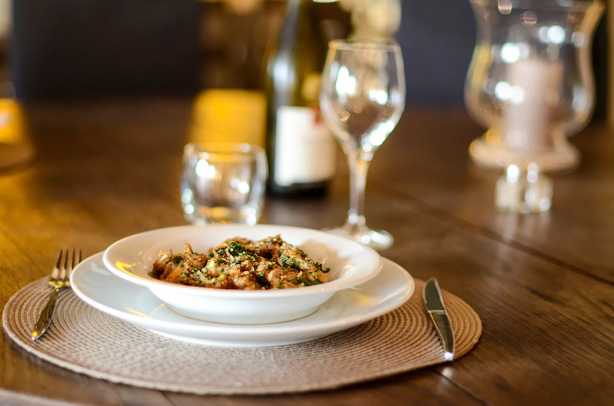

La carte d’automne
À partir du 10 octobre 2026. Une cuisine de saison, entre tradition et modernité.


Cinq menus, toutes les envies
Choisissez votre plat
Encornet farci
Rillettes de poissons et crevettes, pickles d’oignons rouges, mayonnaise à la rouille, tuile à l’encre de seiche
Foie gras de canard
Terrine du Sud-Ouest (80 g), compotée de pomme au safran, mendiant au chocolat 72 % et noisettes
Escargots de Bourgogne
Poêlés au beurre et cognac, duxelles de champignons, mousse crémeuse de persillade
Salade de l’Auberge
Croustillant de Cabécou au thym, jambon cru de Savoie, poires rôties, noix du Montessuy
Velouté de butternut et foie gras
Éclats de châtaignes, mouillette croustillante au foie gras, poivre de Timut
Saint-Jacques rôties
Fondue de poireau, mousseline de céleri à la vanille de Madagascar, crème de haddock fumé
Jeunes convives : 25 % de remise sur les plats choisis à la carte. Tableau des allergènes et pain sans gluten disponibles. Prix relevés sur le site actuel, à confirmer avec l’Auberge.